キレイで揃った歯に憧れるけど、
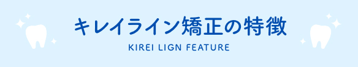
４万円から始められる

キレイライン矯正は1回4万円で始められます。
(※自由診療、平均総額10~30万円)
満足したら止められる
１回４万円でお試しした後は、続けるか止めるかを選ぶことができます。
続ける場合、１回４万円で追加していただき、満足した時点で止められます。平均10~30万円でほとんどの方が満足されています。
平均3〜10ヶ月で治療完了
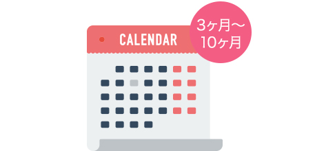個人差がありますが、3ヶ月～10ヶ月程度で施術を終えることができます。
透明で目立たない矯正器具
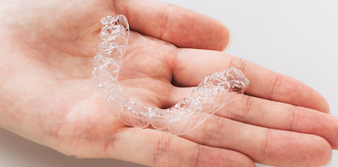歯に見栄えの悪いワイヤーをつける必要はありません。キレイライン矯正は透明な矯正器具のため、装着していることがほとんど見えません。周りから全く気づかれることなく矯正が完了することもあります。
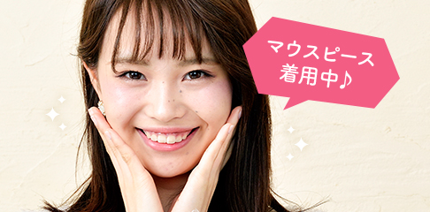※「近くでじっくり見ても、つけていることがわからない！」という声を多数いただきます！
痛みが少なく、取り外し可能
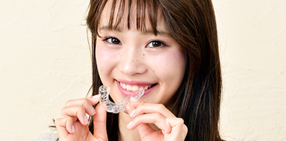歯を動かすため、当然痛みはあるのですが、「我慢できる痛み」という声をよくいただきます。痛くて我慢できない場合には、取り外しも可能なので、安心してお使いいただけます。
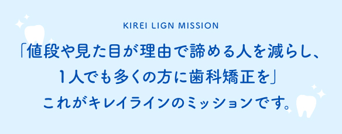
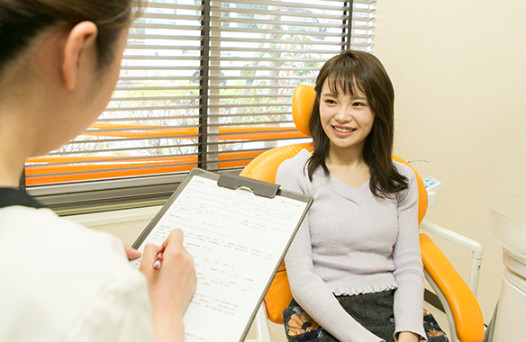「歯科矯正＝高い、痛い、時間がかかる、見た目がよくない」という理由で歯科矯正を諦める方を減らしたい
この想いから、多くの方に選んでいただけるよう、キレイライン矯正を開発しました。
東京のアクセス良好な駅に展開中！
- 新宿
- 自由が丘
- 西池袋
- 赤羽
- 八王子
- 蒲田
- 西糀谷
- 調布
- 竹ノ塚
- 銀座
- 茅ヶ崎
- 氷川台
- 読売ランド前
- 高田馬場
- 原宿
- 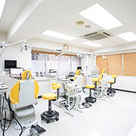新宿
- 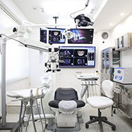自由が丘
- 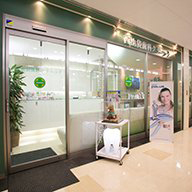西池袋
- 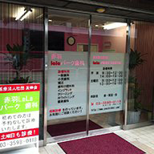赤羽
実は、日本人は世界的に見ても歯並びが悪い国です。あるアンケートでは、日本人の7割以上が「自分の歯並びに自信がない」と感じているという結果になりました。しかし、矯正をする人はごくわずかです。アメリカでは矯正は当たり前で、子供の頃から矯正をする人が多いです。日本でももっと多くの人が矯正をしていくべきなのです。
歯並びが良くなるだけで、与える印象は大きく変わります。
“理想の歯並び”を手に入れて、「笑顔がかわいい！」と言われたら嬉しいと思いませんか？
キレイライン矯正では、ホワイトニングを同時に行うことができます(別料金)。歯並びだけでなく、黄ばみや汚れにお悩みの方、いつかホワイトニングがしたかった、という方にオススメです。
キレイラインにはデメリットもあります。
もちろんデメリットもあります。
それは、キレイライン矯正は全体的な歯のズレや傾きが大きすぎる方には施術ができないという点です。歯のズレ傾きが大きすぎる場合、矯正器具を作ることが難しく、満足のいく歯並びになるまで歯を動かすことができません。
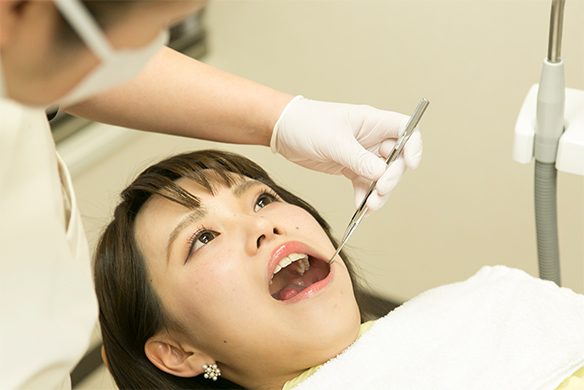なので、来院いただいた方でも、診察をした後にキレイライン矯正の施術をお断りさせて頂くことがあります。
歯のズレや傾きが大きすぎなければ施術可能で、キレイライン矯正のメリットを享受することができます。
「自分の歯並びだと施術可能かな？」
と疑問に思ったら、まずは気軽に初回検診にお越しください。一緒にあなたの歯の未来を考えましょう！
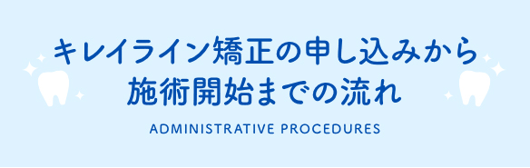
当日、予約した院にお越しください。
まずは問診票にご記入いただきます。
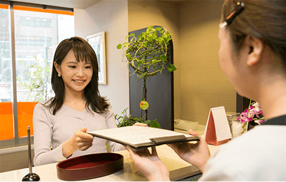 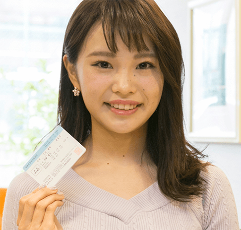
※院にお越しの際は、保険証をご持参ください。虫歯があったときなどに治療することが可能となります。
簡単なアンケートに答えてもらった
のち、歯並びや噛み合わせなど、
歯と顎の状態を診査・診断します。（約5分間）
※キレイラインは歯科検診にて健康な歯と認められた方に処方できます。
検診後、キレイライン矯正を始めない場合は、追加で費用は発生しません。
診査結果をもとに
歯科医と治療計画を立てます。
何回の施術でどの程度の歯並びに
なるかを歯科医から説明します。 （約3分間）
※初回検診では正確な施術回数がわからないこともございます。

キレイライン矯正を実施するかを
ご判断頂き、申し込み用紙に
ご記入をお願いします。
まずは1回だけ試すということも
可能です。

キレイライン矯正具を作成するために、
あなたの歯の型どりを行います。（約10分間）
あなたの歯型のデータは
キレイライン社に送られます。
専属の技工士があなただけの
キレイライン矯正具を作成します。
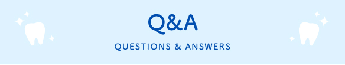
- 自由に取り外しが可能ということですが、寝るときは外すのでしょうか？
- いいえ。キレイライン矯正具は、装着したまま就寝ください。そうすることでよりしっかりと歯並びを矯正していくことができます。
キレイライン矯正具は、あなただけの歯並びに合うようにオーダーメイドで設計されていますので、ガタつくこともなく、しっかりとあなたの歯にフィットして気持ち良く就寝していただくことができます。
- 歯の矯正をしたいのですが、現在虫歯もあるため治療も必要です。虫歯を治療してから矯正をすることになるのでしょうか？
- 虫歯の場所によってはキレイライン矯正をしながら虫歯治療が可能ですが、『痛みがある虫歯』がある場合はキレイラインの適応外となります。別の歯科にて、治療後にご来院ください。
※初回検診の時に虫歯が見つかった場合、具体的な治療方法は医師とご相談ください。ただし、せっかくの機会ですので、虫歯も同時に治してキレイな歯にされた方が良いでしょう。
- どのくらいのお金と期間がかかるか分からないため、まず相談をお願いしたいです。相談後にキャンセルすることは可能ですか？
- もちろん可能です。まずは、検診をして治療計画を立てましょう。検診後に考え直しやキャンセルをすることもできます。まずはお気軽にお越しください。
※初回検診では正確な施術回数がわからないこともございます。
- ワイヤー器具を使わないとなると、どのくらいの期間で治療は完了していますか？
- 治療期間は医師による治療方針や治療計画によって人それぞれです。歯の隙間を少し埋めたいといった方のように、歯を少しだけ動かしたいという方は1ヶ月で完了する場合もあります。長い方でも10ヶ月程度で終える場合がほとんどです。
- なぜ、こんなに安いんですか？価格は魅力的ですが、品質が悪いのでしょうか？
- 低価格を実現できた一番の理由は、治療品質の向上による『治療期間の短縮』です。キレイライン矯正は、価格だけでなく、効果にも強いこだわりを持っています。徹底的にコストを削りながらも、質を上げるための企業努力を日々重ねています。
『矯正経験の豊富な医師が監修』し、『最先端のデジタル技術』をとり入れることで、よりBESTな治療を実現しているのです。その結果、治療期間が短くなり、『価格の安さ』が実現できています。
- 外したマウスピースはどうしたらいいのでしょうか？専用のケースなどはあるのでしょうか？
- 患者さんのキレイライン矯正具をお渡しするときに一緒にケースもお渡ししています。専用ケースに入れることで清潔に保つことができます。
- 私はまだ学生なのですが、体育の授業や部活中など、運動時にもつけていても大丈夫ですか？
- もちろん運動時も装着可能です。どうしても不安のある方は担当医にご相談ください。
- 一日の装着時間はどのくらいですか？
- 効果的に治療を進めるため、就寝中も含め２０時間以上の装着をおすすめしております。
- インプラントをしていても、利用できますか？
- 前歯部にインプラントがある方は、残念ながらキレイラインを利用できません。
- 妊婦中でも矯正は受けられますか？
- 妊婦中は矯正は受けられません。検診にレントゲン撮影が含まれるためです。
- 支払い方法はクレジットカードも可能ですか？
- 店舗によって取扱のカードが異なる場合がありますが、クレジットカードの利用は可能です。
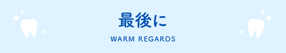
ここまでページをご覧いただきありがとうございます。
ここまでご覧いただいた方は、きっと歯の矯正に興味を持っていただいている方だと思います。
歯の矯正は敷居が高く感じられて、施術への一歩がなかなか踏み出しにくいですよね。
その気持ちはとてもよくわかります。
しかし、今、歯の矯正に興味を持っているのであれば、その一歩を踏み出して頂きたいです。
歯並びがキレイになることで、
- 「周りからの印象が変わった！」
- 「笑顔が素敵だねと言われるようになった！」
- 「自分に自信が持てるようになった！」
- 「歯に食べ物が詰まることがなくなった！」
といった喜びの声をたくさん頂きます。
歯並びが良くなった後の未来は、歯の矯正をした人にしか見ることはできません。
自分の歯とは一生付き合っていくことになります。
ぜひ、歯の矯正をして整った美しい歯を手に入れてください。
将来、あなたが歯の矯正を終えた時に、
「あの時に行動して本当に良かった！」
そう思える日が来ることを願っています。
まずは、気軽に初回検診にお越しください。あなたの来院をお待ちしております。
※『痛みがある虫歯』がある場合は適応外となります。別の歯科にて、治療後にご来院ください。最後までお読みいただき、
誠にありがとうございます。
きっと、
「歯科矯正はいつかやりたいけど、本当にキレイラインで大丈夫なのかな？」
などと思っているかと思います。
「品質や技術は本当に大丈夫？」
「どんな歯科医師が治療してくれるの？」
「実際やった人の、写真を見てみたい」
などなど・・・
キレイラインに興味はあるけれど、
まだ始めるには不安な点がある・・・
そんな人はぜひ、
【症例写真付き】キレイラインのQ&A集
を見てみませんか？
キレイラインの患者様が、実際に治療を始める前に抱いていた疑問と答えをまとめました。症例写真も載せているので、ぜひ見てみて下さいね。
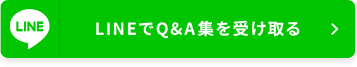 ※定期的に更新するため、LINEにて最新のものを配信しています。